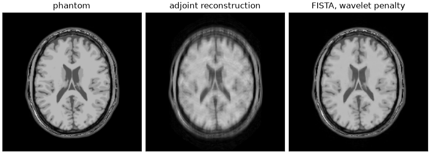

Note
Go to the end to download the full example code.
Operators and solvers#
The same reconstruction written as an encoding operator and a solver rather than as a call to a BART application.
bartorch.tools.pics() builds three objects and runs BART’s iteration
with them: the encoding operator, the regularization terms, and the algorithm.
bartorch.linop and bartorch.optim expose those three separately,
for the reconstructions BART has no application for: an encoding with an extra
factor in it, a solver reached from an outer loop, an operator defined in
Python.
This example builds the encoding of From k-space to image, checks it against the definition of an adjoint, solves with it, and compares the result with the application. The phantom, the coil sensitivities and the sampling are that example’s; the cell that builds them is hidden on this page and present in the script this page can be downloaded as.
import csv
from pathlib import Path
import brainweb_dl
import numpy as np
import torch
from brainweb_dl import get_mri
import bartorch
import bartorch.tools as bt
from bartorch import linop, optim, priors
SIZE = 192
COILS = 8
ACCELERATION = 3
CALIBRATION = 24
The encoding operator#
bartorch.linop.CartesianSense() is \(A = P F S\) as one operator.
It takes the sensitivities, the shape of the image it maps from, and the
sampling pattern; the shape of the k-space it maps to follows from those.
bartorch.tools.pattern() reads the pattern off the measured data, as
for a prospectively undersampled acquisition.
modulated=True selects BART’s uncentred sample convention, which its
applications iterate in; the default is the centred convention that
bartorch.fft() produces. The two differ by a modulation of the samples
and give the same image, so the choice matters only when the operator is
applied to data already in one of them, as it is below.
pattern = bt.pattern(kspace)
A = linop.CartesianSense(maps.squeeze(1), (SIZE, SIZE), pattern.squeeze(), modulated=True)
print(f"{A.ishape} -> {A.oshape}")
print(A.plan)
print(f"fused: {A.plan.fused}")
(192, 192) -> (8, 192, 192)
Plan(transform=fft, image=sensitivities, normal=transform, coil_batch=1, streamed=coils, executor=slab)
fused: True
A.plan reports the form the operator was lowered into: which transform,
what multiplies the image and the samples, and how the normal operator
\(A^H A\) is applied. It is a property of the built operator rather than
a prediction, and plan.fused is false where the composition could not be
expressed as one encoding and fell back to a chain, which computes the same
numbers more slowly.
Applying the adjoint is not the same as applying the transpose, and a reconstruction built on the wrong one converges to the wrong image. The definition \(\langle Ax, y\rangle = \langle x, A^H y\rangle\) holds for any pair of vectors, and holds for random vectors as readily as for real data, so it is a usable check on an operator.
generator = torch.Generator().manual_seed(0)
probe = torch.randn(A.ishape, dtype=torch.complex64, generator=generator)
samples = torch.randn(A.oshape, dtype=torch.complex64, generator=generator)
forward = (A(probe).conj() * samples).sum()
adjoint = (probe.conj() * A.H(samples)).sum()
print(f"relative difference {abs(forward - adjoint) / abs(forward):.2e}")
relative difference 1.20e-07
Solving#
A solver is called as solver(y, A). What it is given is not the array
the scanner wrote but what pics iterates on: the sampling pattern
applied, the modulation into the uncentred convention, and the data divided
by the scaling bartorch.optim.data_scaling() estimates from the adjoint
reconstruction, which is the step that makes a regularization weight
transferable from one dataset to the next.
measured = bartorch.fftmod(kspace * pattern, axes=(-1, -2, -3), inverse=True)
scale = optim.data_scaling(measured)
data = (measured / scale).squeeze(1)
term = priors.Wavelet(axes=(-1, -2), weight=0.002)
assembled = optim.FISTA(term, maxiter=100)(data, A)
With the same preprocessing the assembled solve and the application are not merely close: they are the same iteration over the same operator, and return the same bits.
identical to pics: True
Operator algebra#
@ composes, + adds, A.H is the adjoint and A.gram() the
normal operator \(A^H A\). A composition builds a single BART operator
rather than a Python chain, so a solver iterating on it does not return to
Python between applications. bartorch.optim.maxeigen() runs the power
iteration on an operator, which is how a gradient step size is chosen: the
Lipschitz constant of the least-squares gradient is the largest eigenvalue of
\(A^H A\).
print(f"largest eigenvalue of A^H A: {optim.maxeigen(A.gram()):.3f}")
largest eigenvalue of A^H A: 0.999
An operator defined in Python is composed with BART’s through
from_callbacks(), which BART applies as
a callback. Here it is a spatially varying phase, as an off-resonance or an
eddy-current phase would be, placed between the image and the encoding.
field = torch.exp(1j * 0.4 * torch.pi * grid_x).to(torch.complex64)
phase = linop.LinearOperator.from_callbacks(
(SIZE, SIZE), (SIZE, SIZE), lambda u: field * u, lambda u: field.conj() * u
)
composed = A @ phase
print(f"{composed.ishape} -> {composed.oshape}, fused: {composed.plan.fused}")
(192, 192) -> (8, 192, 192), fused: True
Differentiation#
Applying an operator to a tensor that requires a gradient records the application for autograd. The gradient torch propagates back through \(y = Ax\) is \(A^H g\) rather than \(A^T g\), the conjugate Wirtinger convention torch uses for complex tensors. For a real \(A\), \(A^H = A^T\), so only a complex check distinguishes the two; Differentiation through reconstruction describes the backward passes of the solvers.
variable = data.new_zeros(A.ishape).requires_grad_(True)
residual = A(variable) - data
(residual.abs() ** 2).sum().backward()
expected = 2 * A.H(-data)
difference = float((variable.grad - expected).abs().max() / expected.abs().max())
print(f"relative difference from 2 A^H (Ax - y): {difference:.2e}")
relative difference from 2 A^H (Ax - y): 2.06e-07

The adjoint of the encoding is not its inverse: \(A^H y\) is the coil combination of the zero-filled k-space, and carries the aliasing of the undersampling, which the solve removes.
The regularization terms are the subject of bartorch.priors, and the
iterations of bartorch.optim;
Inverse problems and their solvers states which algorithm applies to
which problem.
Total running time of the script: (0 minutes 4.466 seconds)